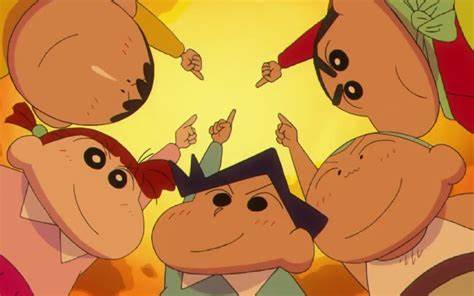
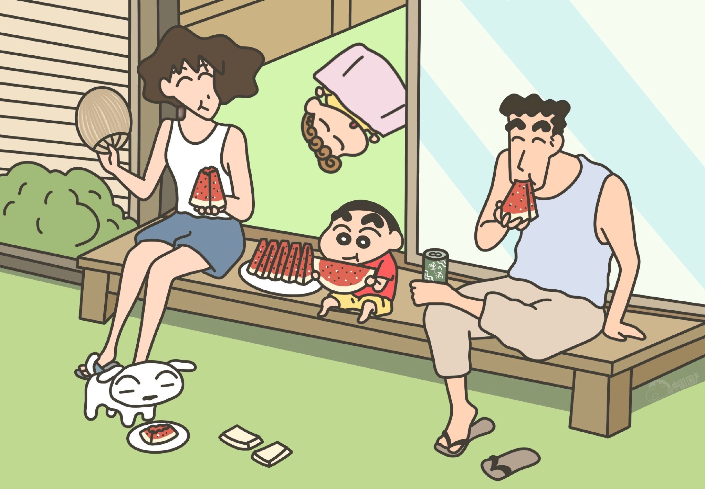

角色介绍 |
||||||
———— 角色介绍 ———— |
||||||
 |
春日部防卫队 |
介绍 |
||||
野原新之助 |
姓名：野原新之助 |
|||||
姓名：风间彻 |
||||||
姓名：樱田妮妮 |
||||||
姓名：佐藤正男 |
||||||
| 昵称：井川棒太郎，阿呆 春日部防卫队身份：春日部防卫队队员 星座：金牛座 年龄：5岁 PS：五个人中并没有固定的队长 |
||||||
野原一家 |
介绍 |
 |
||||
野原新之助 |
年龄5岁。 |
|||||
年龄29岁。熊本出生。 |
||||||
年龄35岁。秋田出生。 |
||||||
年龄0岁。 |
||||||
| 从纸箱里捡来的一只小狗，后来被野原新之助捡回家。 | ||||||
反派 |
介绍 |
|||||
阿健 |
Yesterday Once More的首领，人物原型参考约翰·列侬，爱喝红茶，将爱车TOYOTA 2000GT视为自己的灵魂。认为21世纪的日本只充满着“肮脏的金钱”和“没用的垃圾”，因此计划将人们的“心”带回到纯朴且无忧无虑的20世纪，并以大人们的怀旧心情作为计划的原动力。除此之外，20世纪总是充满着怀旧的味道，而他也已经取得了那股味道，并决定前往东京铁塔大量释放出此味道。而小新将“想要长大”等言词透过与野原一家的奋斗过程传达给了“20世纪的居民”，大幅降低了他们的怀旧心情，导致Yesterday Once More返回20世纪的计划彻底失败，承认败北的那一刻向小新表示“我把你的未来还给你”，尔后其家人赶到小新身边，而追捕他们一家人的Yesterday Once More员工也突然撤兵。抵达东京铁塔顶楼时，本来想和茶子一同以结束生命（跳楼）的方式逃离“21世纪”的到来，却被小新的喊声和在他们脚边筑巢偶然飞起的鸽子阻止了。最后带着茶子一同离开了春日部。 |
|||||
本部电影女主角，阿健的同居女友。和阿健一样对于21世纪有着相同感慨。总是面无表情，不过故事后半，曾被广志看到小裤裤而感到愤怒，计划失败后，原本要跳楼寻死，最后一刻放弃并流露出“我不想死”和其真心。是广志和小新父子俩共同认定的好女人。 |
||||||